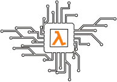

Hardware Acceleration of Functional Languages
This project will develop a special purpose processor for accelerating functional programming languages, by implementing functional languages runtime components in hardware using the latest FPGA technology. The project will run from May 2022 for 3 years.

News
The latest updates about HAFLANG.
- Nov 2021 - The project has been funded!
- The project will soon be opening a postdoc position to start May 2022.
- There is funding available for PhD projects associated with this project.
Project goals
By implementing functional languages in FPGA hardware, this project aims to increase throughput to shorten runtimes and reduce energy use compared with CPUs. Our objectives are:
- Remove layers of compiler-based indirection in software based functional languages by designing a soft processor that better matches the graph reduction model.
- Investigate hardware memory hierarchy design for non-strict functional languages.
- Develop graph reduction innovations in hardware, such as garbage collection "close to" intelligent memory units.
- Discover the kinds of applications best suited for hardware acceleration of graph reduction.
For inquiries about the project, and the postdoc position and funded PhD projects, please contact the PI Dr. Rob Stewart at R.Stewart@hw.ac.uk.